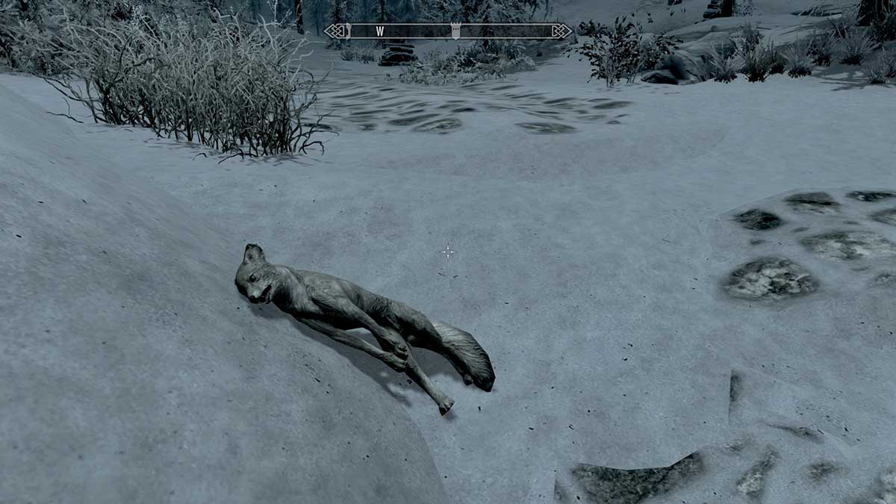
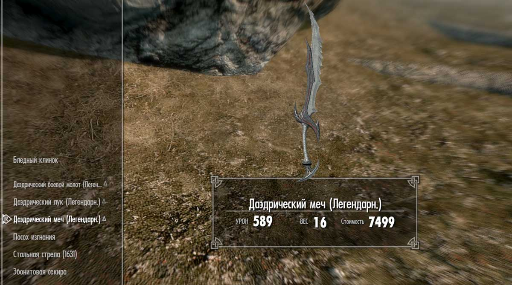
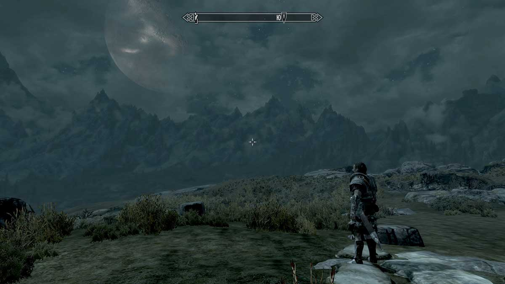
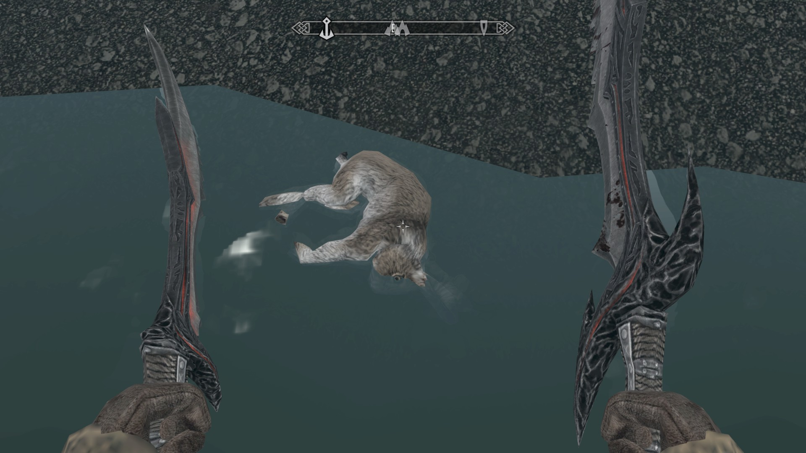

| Хобби | Блог | Презентация |
|
Мое хобби Мне тяжело выделить что-то одно как хобби. Так что к хобби я решил отнести то, на что я потратил больше всего своего времени. Время игры. Начал играть в ролевые игры я еще до этого, но именно "скайрим" заставил меня сидеть у компьютера часами. Что же привлекло меня? Поначалу было интересно замечать какие-то различия с предыдущими играми, затем я стал бродить по миру, изучать его. Здесь он был очень правдоподобен, хотя и мал. К сожалению жители мира были не так интересны: однообразные реплики, мало возможностей для взаимодействия.  Убитая лиса. Сюжетная часть увлекла меня не сразу. Я обошел всю карту, выполнял какие-то посторонние задания, которы были достаточно трудны. К какому-то времени стало понятно, что дальше игнорировать сюжет нельзя, потому что самое интересное было недоступно. Начав выполнять главные задания стало понятно, что настало время самого главного в любой ролевой игре: прокачки навыков. На это я потратил достаточно много времени.  Результат прокачки. После этого прохождение стало легким. Я уже не тратил на игру так много времени. Остались только побочные задания, дополнительные сюжетные линии, которы оказались даже несколько интереснее основной.  Вечер в игре. К игре выходили дополнения, которые немедленно покупались и проходились. Когда уже совсем не осталось заданий, я начал выполнять достижения в игре, просто, также, как и в начале игры, ходить по миру, охотиться на мелких животных, обворововать жителей, разграблять города. Сейчас я уже не играю, но обязательно вернусь к игре когда-нибудь.й  Лучшее в игре. |